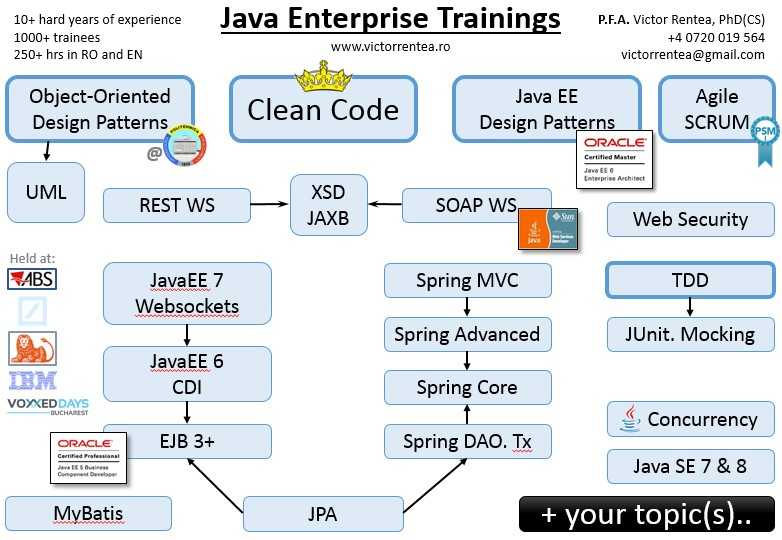

Hi, I'm Victor,
an enthusiast Clean Coder, Senior Java Engineer, Tech Team Lead at IBM, and independent Trainer,
PhD in Computer Science and certified Oracle JavaEE6 Architect.
If you're looking for an interactive custom training for a group of employees, you'll find bellow my concept of a good training
that I used to develop the 20+ modules I teach,
and some recommendations from senior fellows.
an enthusiast Clean Coder, Senior Java Engineer, Tech Team Lead at IBM, and independent Trainer,
PhD in Computer Science and certified Oracle JavaEE6 Architect.
If you're looking for an interactive custom training for a group of employees, you'll find bellow my concept of a good training
that I used to develop the 20+ modules I teach,
and some recommendations from senior fellows.
Training
Over 300 hours of training held to more than 1000 persons, in Romanian and English, in-class and remote, including in academic setup.
A good training should...
- Incite you through a very active style with questions, brainstorms, animations, demos, videos, jokes and contests with prizes
- Help you understand the core concepts: The driving purpose, the "WHY", the underlying phylosophy
- Show most of the story, with lots of examples and exercises; no dull APIs or values to memorize
- Explain the tricky parts via intuitive animations or easy-to-remember diagrams. You'll love it! (cf. feedback:)
- Overview best practices and main pitfalls from real world scenarios
A good training should...
- Incite you through a very active style with questions, brainstorms, animations, demos, videos, jokes and contests with prizes
- Help you understand the core concepts: The driving purpose, the "WHY", the underlying phylosophy
- Show most of the story, with lots of examples and exercises; no dull APIs or values to memorize
- Explain the tricky parts via intuitive animations or easy-to-remember diagrams. You'll love it! (cf. feedback:)
- Overview best practices and main pitfalls from real world scenarios
To meet the above criteria, I've personally created my training materials, through hundreds of hours of hard work to distil the most distinguished books (plus other sources).
Several key slides in my presentations can become the starting point of interactive digressions about related concepts, in case the trainees want us to go there. And they usually do ;)
A lot of exercises
We will do exercises > 50% of the time.
You will get a preconfigured virtual machine, that will allow you to solve the exercises in class or back home, as well as to explore their solution.
A lot of questions and prize-contests will spice up the rest of the time of my modules.
Customized Agenda
Every group has its own interests or needs specific skills, so the course agenda is always personalized. Perhaps you aren't sure what topics to choose. Please, let me help you with that.
I always like to sit together with the trainees before the training and explore what you they really need/want. We could pick several modules from those listed here, customize them or add completely new ones.
Most modules are designed to take around 2 hours, including demos, exercises or contests. In each day, 3 regular (2h) modules can be covered, plus a little extra practice or discussions. From my experience, trying to cover more than that usually just exhausts the participants with no additional benefit.
Industry-proven, Certified proficiency
I won't bore you. I will come with real-life examples and arguments, not with some from-the-book blah-blah.
I have 9 years of industry experience with all the technologies I teach. I've used them all to design, develop and deliver in production enterprise applications for demanding corporate clients like world-leading flavors&fragrances company, Belgium Post, or French BNPParibas Bank. Right from the beginning of my career, back in 2006, I was always the one who explored the boundary cases of the techonologies for each project, those places where what you wanted was not readily available out-of-the-box. In every case, I always strived to provide the simplest solution to each specific requirement, by following the phylosophy of each technology.
To be sure I covered all the corners of the Java EE specifications, I also obtained a long series of certifications: Sun Certified Java Programmer (SCJP), Sun Certified Web Service Developer (.wsdl,JAX-WS), Oracle Certified JavaEE5 Business Component Developer (EJB,JMS,JTA), Sun Certified Web Component Develiper (Servlet,JSP), Oracle Certified SQL Expert, and, the most interesting: Oracle Certified Java EE6 Enterprise Architect
I'm looking for questions
I am always expecting questions any time during the trainings or breaks. The more questions I get from you, the more I manage to explain you. Honestly, there is no greater satisfaction for me but to answer your questions - it's only then that I'm sure I'm really helping you. The questions need not even be directly related to the topics we were talking about: I would be equally glad to be able to help you in any issues of your daily programmer life.
I always say: for the sake of a classroom, the "dumbest" question is the best question. It makes everybody clarify their understanding, it rapidly involves everybody and opens up communication bridges. So- just ask!
The best trainings happen when we manage to build a collaborative brainstorming-like athmosphere in class. So, let's talk!
 Quality Guarantee
Quality Guarantee
From the very first training I delivered I started asking anonymous feedback. The global results (from 297+ feedback forms) is summarized in the chart bellow. Upon request, I can show you the feedback forms (~2kg:), or per-module statistics, where available.
Furthermore, as a sign of consideration, I will remain available remotely for the trainees for 1 week after the sessions for any questions or clarifications.
Valuable recommendations from senior developers that attended my trainings are also available here.
Finally, the training contract will include a restitution clause in case of negative final feedback. I'm really sure it's useless.

Training Modules
Object-Oriented Design Patterns
2 parts x 2 hoursThis is the star-training of my portfolio. Delivered more than 10 times in various formats and setups, I also held it for the last two years as part of the "Java" faculty course of the Automatics & Computers Department of Politehnica University of Bucharest.
This 2-part module will cover the most used Object-Oriented Design Patterns from the reference Gang-of-Four book. Although the material covers all the GoF patterns, I would recommend instead to focus and analyze in more depth those patterns that are most used to day, and omit the grayed-out patterns in the agenda. This way we might gain enough time to talk about related concepts such as Aspect-Oriented-Programming, dynamic Java Proxies, and more.
The presentation is very dynamic, with a lot of real-life examples to help you deeply understand the concepts and remember them forever.
The extensive application part of this module however, is the one that will definetly shed light to all the quirks of the patterns. When your own hands will write the solutions to the exercises, you will have no choice but to fully understand the design patterns.
The target audience includes any Object-Oriented programmers, on Java or .NET.
Part 1
1:30' talk, 30' practice
- What are design patterns? Pros/cons...
- 3 Principles of a Good OO Design
- The SOLID principles
- Creational Patterns:
- Singleton
- Builder
- Factory
- Factory Method
- Prototype
- Structural Patterns:
- Adapter
- Proxy
- Decorator
- Composite
- Facade
- Bridge
- Flyweight
Part 2
40-50' talk, 30' practice, 20' test with prises+explanation, 10' anti-patterns
- Behavioral Patterns:
- Observer
- Iterator
- Strategy
- Template Method
- Command
- Visitor
- Chain of responsibility
- Mediator
- Memento
- State
- OO Antipatterns
- It was a very interesting and interactive course! Thank you for it!!
- The practical examples provided are very easy to remember and I really think I'll remember these concepts for a long time
- The exemplification of the pattern's idea on practical real world situations was very suggestive and really helped me understand the concepts deeply.
- The application part was very interesting!
- Not being so familiar with the subject, I found all very interesting, especially the Design Patterns which are often used in Java.
- It was all very interesting
- You have nothing to improve!!!
- The examples were the most important, and they really helped us understand a lot better the concepts presented (and I'm referring here to several of us who didn't knew almost anything about design patterns).
- All the topics were interesting, but especially the Anti-Patterns!
- To me, the entire course was important.
- Every notion was important to me and helped me understand better what I have to do and how.
- I personally liked how you managed to keep me alert. I wasn't bored for a second and I got a lot of necessary and important informations
- All the parts were important!
- What to improve? Nothing!
- I think it was especially interesting the live changes of the code together with their explanations
- Taking into account that I haven't used design patterns until now, the examples helped me a lot
- I consider very important the principles and concepts presented
- The application of the described concepts was of great value!
- The entire course was very exciting!
- The high-level general part was very interesting
- The test and the application enable a deep understanding of these patterns on the long term
- Impeccable, very clear and suggestive
- The application part was essential, along with the evaluation of the acquired understanding and the excellent graphical representation of the concepts and their correlation (for differential learning)
JavaEE Design Patterns
2 hoursDeveloping Enterprise applications is hard. No one can argue that.
But why? Is it because of their overly-complex business logic, their NFRs, the heterogenous teams, the business-IT gap, or maybe a combination of it all? Whatever the cause, enterprise applications tend to be very large, with a considerable proportion of similar functionality. The perfect place for a pattern.
Enterprise application strive for order. They simply can't stand a chaotic unorganized approach that will render their maintainance HELL and eventually lead to the dreaded REWRITE.
This module covers the major design patterns used in the development of typical enterprise Java applications. The patterns are studied on layers, paying special attention to the Client and the Business Layer, the places where the actual creativity usually resides. The participants will learn the principles of a good JavaEE design and solutions to various recurrent problems.
With one of the largest bibliography of all my modules, this course is based on a considerable part of the Oracle Certified JavaEE6 Architect agenda. Even if the patterns are implemented using the Java EE5+ standard, most of these patterns can be used in any major middleware framework, like Spring.
This module is probably the most difficuly one in my portfolio, so it is dedicated to those with certain experience in JavaEE/Spring, but also to those who love challenges.
Throughout the talk, we will stop on certain patterns to see how they look in code and to finalize certain incomplete implementations. However, the application part is rather scarce compared to my other modules due to the very abstract nature of the covered topics.
NOTE: In case you want us to dissect a real-world example of an Java Enterprise application, I have such an example prepared that will take 1 more hour.
1:30 talk, 25' demo, 5' recap test,
[optional] 1h inpection of real-world Java Enterprise Application
- Introduction: pro/cons, pitfalls
- Several acronyms & principles: DRY, KISS, SRP, ...
- Layered Application Architecture
- Presentation Tier Patterns
- MVC
- Model2
- Rich Internet Applications
- Model-View-Whatever: M-V-P, M-V-VM
- Comet/Server Push
- Business Tier Patterns
- Facade
- Service
- Method Object
- Entity
- Domain-Driven-Design
- Integration Tier Patterns
- DAO
- DTO
- Infrastructural Patterns & Utilities
- Service Activator
- Asynchronous Call
- Singleton
- Service Locator
- Context Holder
- Mapper
- Antipatterns
- You managed to capture the essence of the subject and transmit the informations in an interesting and interactive manner! Congratulations!
- Excellent time management
- Very intuitive animations in slides
- You managed to capture the actual approaches to EE Design Patterns and to explain very well the structures
- You had a very clear and concise presentation style
- Very intersting the infrastructural patterns
- There is nothing to improve to this course
- The entire course was very interesting!
- Very interesting the presentation of the layers of an application - the overview
The Art of Clean Code
2 parts x 2 hours (or shorter)The primary value of software is to be flexible. The secondary value of software is to do what business wants it to do.
Sounds insane? Just think a bit: what's the difference between IT and regular engineering? What propulsated IT that much? The ability to evolve, to adapt to new business needs. And we all know how difficult it is to adapt and strech old, dirty, rigid code.
Financially, the fact that 80% of the costs of a software project are in maintenance may not concern you, the developer, directly. But the fact that you read 10x times more time than you write code should make it clear to you: do your very best to write clean, beautiful code that is easy to maintain. This module explains how do such art.
Besides the bare act of writing code, the module also tackles the problematic of team work, code responsibility and cooperation necessary to any professional software engineer.
The module covers the most important practical aspects from the reference book 'Clean Code' by Robert C. Martin, along with many other sources. The training material was reviewed and discussed with numerous seniors to reach a wider consensus regarding the ideas and their nuances.
This is the module which is most likely to have the deepest impact on your day-to-day work, changing the way you exercise your profession. That's why I allways recommend to add this module to any training.
Part 1
1h talk, 1h practice: cooperative cleaning up of Martin Fowler's Video Store refactoring example
- What is Clean Code
- Names
- Express intent
- Parts of speech
- Functions
- Function Size
- Extracting Method Objects
- Function Signature
- Side Effects & Temporal Coupling
- Command/Query separation
Part 2
1h talk, 1h practice
- Classes
- Basic Shape
- True Encapsulation
- Data Structures vs. True Objects
- Switch+Data Structures vs. Polymorphic Objects
- 'Tell, Don't Ask' Principle
- Feature Envy
- The Plugin Model: Dependency Inversion
- Code Formatting
- Comments are failures
- TO COPY
Enterprise Java Beans
2 hoursIt's Black Friday, 600 AM. From the 1.000.000 users logged in on the emag.ro site, 1.000 submit their purchase each second. The online store application must resists such pressure while ensuring that all transactions are correctly processed. Furthermore, just realize that the online shopping system is not alone - it relies on quite a series of 3rd party services such as banks, courier services, suppliers and distributor chains, etc...
Now, imagine building such a system from scratch, without any libraries in Java SE. By the way, did you thought about distributed transactions and 2PC?
I think you now begin to understand the problematic addressed by the EJB standard and the entire Java EE suite altogether. Now, obviously, besides the challenges of the infrastructural requirements, the business logic of this application is extremely difficult to manage by itself. So why not leave EJBs to handle most of these infrastructural requirements?
How does the EJB standard simplify the development of such demanding applications? What services does Java EE5+ offers us to overcome these callenges? How does it promote quality code?
1:15 talk, 15' test with prizes, 30' demo applications
- Introduction: what EJB gives you
- Stateless Session Beans
- Stateful Session Beans
- Declarative Transaction Management
- Interceptors
- Timers
- New stuff in EJB 3.1Introduction
- Explanations were very clear.
- Very useful explanations!
- The topic about transactions was very useful
- Good idea with the test!
- A very good presentation and exemplary explanation of examples
- Very interesting topics: transactions, stateless beans, interceptors and declarative security
- The exercises applied on the theory were very usefulEverything was very important
What's new in Java EE6. CDI.
2 hoursThis module explains the major additions of the version 6 of the Java EE uber-standard.
Particular emphasis is given to the brand new revolutionary CDI Beans (Context and Dependency Injection standard). You will be amazed by the power of the CDI beans, their simplicity and their extensibility. CDI events will also surprise you with an unprecedented extremely loose coupled way of doing message-passing in Enteprise applications.
It is recommended for the participants to either have basic knowledge of Java EE5 or to have attended to the EJB module.
1:30 talk, 30' demo of CDI beans
- EJB 3.1
- @Singleton
- no-interface view
- async calls
- packaging
- Context and Dependency Injection
- @Inject
- Events
- scopes
- Servlet 3.0: async. processing of HTTP requests
- Bean Validation
- You were very well prepared.
- The application was very suggestive.
- The entire course was very interesting
What's new in Java EE7. WebSockets.
2 hours2013 brought WebSockets in the Servlets' API, that is, true bi-directional browser-server communication.
This, and the most interesting other APIs and simplifications in JavaEE7 are explained in detail. This module doesn't cover the batch support, however.
It is recommended for the participants to either have basic knowledge of Java EE5/6 or for this module to be preceeded by the respective modules.
1:10 talk, 50' demo (including websockets)
- JAX-RS 2.0
- Client-side API
- Async on server- and client-side
- Interceptors
- JMS 2.0
- Web Sockets API
- JSONP
- Concurrency UtilitiesEJB 3.1
What's new in Java SE 7 & 8. Streams.
1,5 hoursThis hands-on workshop exercises the new main new features introduced in Java7 and Java8, with a special emphasis on the practical use of Lambda and Streams in day-to-day programming of real-life applications.
This module doesn't have much theory - it's all about practicing and geting a feeling on how will Java development change in a timeframe of several years.
The trainees will write code themselves to practice these new features.
1:30 workshop (individually on each one's VM)
- Java SE 7
- Try-with-resources
- Diamond notation
- Binary literals, _ in literals
- String switch
- Multi-catch !
- Java SE 8
- Lambda expressions
- Streams
- Default Methods
- Other more advanced goodies: type-checking @
Java Concurrency
2-4 hoursThis intense module explains the core Java Concurrency principles, with special emphasis on the most useful topics in day-to-day practice: the monitor object, wait()/notify() primitives and the Thread Pool Executor. The hands-on lab that follows after the talk will test your understanding by solving several real-life applications of these concepts and classes. This module can be condensed to only 2 hours by diving into the details of only the most useful topics, or can be extended to 4 hours by including extended exercises (e.g. some technical interview questions related to concurrency - they are very-very nice!)
To fully benefit of the module contents, one should review the core thread syncronization mechanisms: lock, semaphore, and if possible the Mutex concept. The course contents can become pretty challenging, if the trainees are interested in the topics.
The trainees will write code themselves to practice these features.
1:00-1:30 Talk, 1:00-2:30 exercises (individually on each one's VM)
- Introduction, Various terms: (livelock, race condition, etc)
- Basic Concepts
- Atomicity
- Thread Safety
- Cancelling an execution
- Concurrency Patterns
- Lock
- Semaphore
- Latches
- Barrier
- Monitor: synchronized keyword
- Signaling: wait()/notify()
- Readers-Writers Lock
- Thread Pools, Executors
- Thread Local Storage
- Best practices & Pitfalls
Performance Coding
2-4 hoursThis advanced module gives general advice on how to write high-performance code in Java. The contents aims to be just a starting point for long discussions, as I will often ask the participants how would THEY implement a certain functionality already available in JVM (example: String.intern()). That's why this module is more of a brainstorm than a classic training, and highly motivated professionals would make it a very-very-very interesting session. The discussions may easily divagate to general algorithms and macro-design decisions. Any real problems the participants bring with them are MOST WELCOME: we will dissect them together in class, discuss tradeoffs and pitfalls.
The target audience has at least a couple of years of experience in Java and they like to think 'out of the box'.
2:00 Lecture+Brainstorming
- Opening Thoughts: Performance in Java Enterprise App
- Effective Memory Usage
- Lazy Init, Eager Deinit
- Canonicalization, String.intern()
- Object Pools: WHY ?
- Thread Locals
- Weak, Soft References + Practice
- Effective Multi-Threading
- Amdhal's Law
- Synchronization Cost
- CPU Register Flushing
- How to Avoid Synchronization
- Thread Pools
- Executor Types
- Sizing the Queue
- Sizing the Thread Pool
- Fork-Join-Pool (1 word)
- Database
- JDBC
- JPA (+Discussions....)
Java Performance Tuning
1 dayYou need to tune the performance of your Java applications? You don't understand the outcomes of the tunings you experimented? You want to learn how to write high-performance enterprise Java code? You want to know how to find a memory leak in a Heap Dump? Or you simply want to learn a lot about how your 'dear' JVM actually does its amazing(!!!) job?
Whatever the case, you should already have a number of years of experience in Java and the terms like CPU register, heap, stack and thread should not be strange to you.
This course is not intended to be a full reference of all the possible tuning options. Instead, the goal is for the trainees to fully understand the core concepts and principles underlying the performance of the JVM. Of course, the training explains in quite a detail the major tuning options, that 90% of the cases are enough to reach the performance goals. Multiple experiments will prove the effects of these tuning options in practice.
The trainees will be able to practice JVM monitoring and tunings on their own machines.
1 FULL day = 4:00-5:00 Talk, 3:00 exercises (on beamer and then on each one's machines)
Module 1 - Intorduction to Performance
1h talk
- Measure Don't Guess
- Beware of Tools
- Core Measurings: Responsivity, Throughput, Load, Work Load, Utilization
- Gowing Slower to go Faster: discharge the bottleneck
- Finding the Dominating Consumer algorithm
- CPU counters
- Time Budgeting
- Stress Tests: Types
Module 2 - Garbage Collector
1:30h talk, 0:30-1:00 practice
- GC Principles: Generations, Heap Fragmentation, ..
- GC Algorithms
- Serial Collector
- Parallel/Throughput Collector
- CMS Collector
- G1 Collector
- Choosing a GC: general guidelines
- System.gc
- Sizing for Heap, Generations, PermGen/Metaspace
- Monitoring GC: jvm GC log output, jconsole, jstat, jVisualVM, HPJMeter
- Tuning GC: Throughput, CMS
- Thread Local Allocation Buffers
Module 3 - Finding Memory Leaks
30h talk, 0:30-1:00 practice
- OutOfMemoryError: Causes
- Out of Heap: possible leak sources
- GC Roots
- Investigating Leak using Tools: a full example
- Visualize the Leak (jvisualVm, hpjmeter)
- Heap Dump Analysis(jvisualvm, Eclipse MAT): largest set of instances for a class, path to nearest GC Root
- Memory Profiling (jvisualVm): How many objects were just created, how many generations, by who?
- GC Recap Quiz
Module 4 - Just-In-Time Compiler
1h talk, 0:15 practice
- Interpreted vs Compiled Code
- Hot Spot Compiler
- Optimizations: Static vs Dynamic
- Example: Dynamic Optimizations with Escape Analysis
- JIT Compiler: Levels, Monitoring
- Code Cache
- General Coding Advices
- Leftovers.. (upon request)
Java Persistence API
2+ hoursImagine a project with no more SQL. No more FK, sequences, weird column names, PreparedStatements and Result Sets. No more database schema diagram on your desktop, next to your Java domain model. No more lightLoad/fullLoad, no more storing IDs of other entities in fields. It's all just Java now. The database remains just a detail.
We will also discuss the scenarios in which JPA is appropriate or not, and what to do in case you really need some database-specific feature (e.g. CONNECT BY, or /*-hints).
This module introduces your to this marvellous standard, teaching you how to design your Java Object-to-Relational Database Mapping (ORM), explaining the common best practices and pitfalls.
The second half of the module explains in details how the EntityManager actually works, including tricky stuff like lazy loading, cascading and detach/reattach entities.
The trainees should have some experience with SQL and Java. Ideally, they would also know the basic concepts of declarative transaction management in EJB or Spring (but this is not mandatory).
1:20 talk, 10' test with prizes, 30' demo pitfalls
- Introduction
- Mapping Java Objects to Database Tables
- Mapping basic fields
- Mapping relationships (1:1, 1:n, n:n)
- Mapping inheritance
- EntityManager: Principles and Concepts
- Entity lifecycle
- Java Persistence Query Language (JPQL)
- Everything was very important
- The hands-on application was very useful
- The in-class ORM exercise was an excellent idea. I really managed to master the concepts there.
- Very clear explanations
- The contents could easily span 3 hours, please extend it a bit, to have time to discuss everything in depth.
RESTful Web Services
2 hoursIn 2000, Fielding's Doctoral thesis has shaken the world of web services, introducing a series of design principles using which the development of web services could become childs play. Apparently.
Let's dive together in the world of REpresentational State Transfer, and understand its principles, how they differ from SOAP-based web services, their pros/cons, and then see them in action in Java.
This modules covers both the theory backing the REST web services as well as their implementation in Java (JAX-RS). It remains up to the trainees if we either sweep rapidly over the architectural principles, either go into details about the more advanced topics of the subject.
1h talk, 1h hands-on: simple REST endpoint using JAX-RS
- Basic REST Concepts:
- Resources, URIs
- Principles of Resource-Oriented Architecture
- Versioning, Content Negotiation
- Designing a REST WS: steps, common pitfalls
- JAX-RS: walk through code examples, RESTEasy
- Testing Tools
- The application was very useful. I really got it now!
Web Services (.wsdl)
2 hoursThis introductive course covers the basic knowledge of WSDL-related technologies required in the day-to-day life of a Java developer. Most 'normal' usage patterns of WSDL are covered, along with some insights on how JAX-WS binds those technologies in Java. Of course, we could spend days talking about this topic, although the things we would cover will very rarely be used in real-life. However, if you need to take up a very complex set of web services or you really want to learn specific niche parts of these technologies like WS-Security-*, the course can be extended to with an additional module to cover those additional topics.
1h talk, 1h hands-on: contract-first and Java-first approaches using JAX-WS 2
- Introduction: why, pros/cons, bit of history
- SOAP
- Envelope structure
- Messaging styles: doc/lit and rpc/lit
- MTOM
- WSDL: Structure breakdown, how to read?
- JAX-WS
- Java-first and Contract-first
- JAX-WS Handlers
- Client Architecture
- Customizations (i.e. bindings)
Spring Framework
5 parts x 2 hoursMeet the framework which competes with a standard. The debate will probably never end: Java EE vs Spring.
Spring blossomed in the times of EJB 2.x, enabling a cleaner, extensible and more flexible approach vs an immature and badly designed EJB specification. Even if the Java EE standard greatly evolved, Spring remained a competing alternative to Servlets, EJBs and CDI beans.
You may wonder: why?, how is this possible? What about vendor/version-lock-in? And you would be right. However, lots of architects choose to lock their applications to Spring instead of coding to the JavaEE standard alone.
The major advantage of Spring is that you can do (pretty) almost you ever want to do - you probably only need to configure some beans or at most extend some Spring helper classes. Whereas in JavaEE, as soon as you need something not available in the standard, you are lost - you would then probably need to lock yourself to the Application Server implementation (Managed beans, login modules, logging extensions, WAS SSL providers, etc).
Apart from this flexibility that allows you to cover all those particular odd technical demands of your application, Spring also comes with several very-very nice helper classes that help you reduce the boilerplate code in your application. JdbcTemplate and RestTemplate are the most renowed, effectively reducing the size of your DAO/ws client layer to a remarkable extent.
Spring integrates perfectly with all the services of the JavaEE platform, and all the other major frameworks out there. Some say that if a java technology does not integrate with Spring, it's not mature enough, and perhaps you should reconsider the alternatives :)
The last part covers Spring Batch, a time-proven framework for building batch applications that manipulate large sets of data in a streaming-like fashion, with features like restartability, resume, jdbc batches, flat file parsing, etc. Although its complexity is remarkable, this part will target the more basic usages necessary for vanilla batch applications.
The modules have a very pronounced applicative nature, with lots of exercises to fully understand the concepts.
For a full example of a real Spring enterprise application, an additional hour would be required (not included in neither of the modules)
Part 1: Spring Core Basics1:10 talk, 50' hands-on
- What is Spring? Why Spring?
- Defining and Wiring Beans: XML and @nnotation
- Bean Lifecycles: scopes
- Setting up Spring
1:10 talk, 20' demo AOP, 30' exercise
- Spring AOP
- Externalizing Configuration; SpEL
- Advanced Topics: @Inject, Extensions, ...
- Testing Support
1:10 talk, 50' hands-on
- Spring DB access Philosophy
- Working with JDBC: JDBCTemplate
- Working with JPA
- Declarative Transactions
- Concepts & Principles
- Transaction Propagation
- Transaction Isolation
1h talk, 1h hands-on
- Introduction
- Annotation-driven Controllers
- Securing Spring Applications
- Publishing and Consuming JAX-WS web services
- Publishing and Consuming RESTful web services
1h talk, 1h hands-on
This part will be finalized upon your request. I have the necessary experience: I have built and delivered an application on top of Spring Batch.

JUnit Testing. Mocking.
2 hoursThis course will be finalized upon your request.
Test-Driven Development
2 hoursMeet the next level of software development.
What if instead of writing some tests after writing the actual development, you would begin developing a new feature by first writing a unit test for it. The test will fail!, you would say. It's meaningless!!
Not at all!
Because as soon as you'll see the test passing, that feature is secured from then on. If you do it correctly, you will get 100% real test coverage!.
And what does that mean? It means that you will not fear your own code anymore. You will be able to refactor it as you like, without the terror that you'll break some feature. And as soon as you will refactor it freely, the code will stay alive, it will be able to follow the business requirements closely and cleanly.
Besides the TDD phylosophy and implementation, this module also provides a remarkable series of guidelines for writing good unit tests.
Basic knowledge of unit testing and Java test mocking frameworks (EasyMock, jMock, Mockito,...) is recommended. The JUnit Testing module can bridge that gap for you.
1h talk, 1h hands-on (Bowling game kata)
- Definition
- The 3 Rules of TDD
- TDD Mantra: Red-Green-Refactor
- Advanced Unit Testing
- What does a Unit Test tell you ?
- Fragile Tests vs. Clean Tests
- Fluent Builders at their most
- Testing Persistence
- TDD Pros & Cons
- Behavior-Driven Design: an introduction
UML Modelling
2 parts x 1,5 hoursA diagram is the most efficient way to communicate, understand and reason about a software design. That’s why any professional application developer should talk UML fluently. This training covers the UML diagrams most frequently used in the daily practice of a software developer, with particular emphasis on Class, Sequence and Activity Diagrams. Other less common design-time diagrams are also covered, although without going into unnecessary details.
For each exercise, the classroom will be split in teams of 2-3 members, and each team will ellaborate a diagram for each exercise. After the time elapses, each team in turn will explain their solution to the entire classroom to provide a starting point for in-class brainstorming. Alternative modeling options and various design assumptions will be analyzed.
Part 11h talk, 30' in-class brainstorming: 2 class diagrams
- Introduction
- Structural UML Diagrams
- Class Diagrams (in detail)
- Object Diagrams
- Package Diagrams
- Component Diagrams
1h talk, 30' hands-on: 2 sequence and 1 activity diagram
- Behavioral UML Diagrams
- Sequence Diagrams (in detail)
- Collaboration Diagrams
- Activity Diagrams (in detail)
- State Machine Diagrams
- Best Practices for drawing diagrams
Requirements
1 hourIn the beginning, there were the Requirements.
What are those? What kind of requirements are there and where should I search for them? What are those “non-functional requirements”, after all, and why should I care about them? This short module tries to answer those questions from the practical viewpoint of a software developer/architect.
1h talk & discussions
- Source of Requirements
- Requirements, Qualities and Constraints
- SMART Requirements
- Functional Requirements
- Non-Functional RequirementsIntroduction
Enterprise Integration Patterns
1+ hourWe will study the classic Enterprise Integration Patterns as described by Gregor Hope in his reference book, walking them right of his website, explaining and discussing each in turn.
For the application, we will solve together in class an enterprise integration problem using a little Spring Integration-based application.
40' talk & discussions, 20+' Hands-on with Spring Integration
- Introduction
- Integration Styles
- Messaging Systems
- Messaging Channels
- Message Construction
- Message Routing
- Message Transformation
- Messaging Endpoints
- Utils
If necessary, we can ellaborate more on each pattern and expand the application part such that to spend 2 hours on this module, in order to deeply understand each of the patterns.
Web Security
1 hourYou probably have heard of Cross-Site-Request-Forging, SQL Injection or URL forging, but can you clearly define them? Do you truly understand what they are about, when do they happen and how can they be avoided?
The course covers the Top 10 Web Security Attacks in 2013, as reported by OWASP. Each attack is explained, exemplified and then one or more solutions are proposed to them, in a workshop-like atmosphere.
Anyone can participate, although some minimum knowledge of the web technologies is recommended (JavaScript, HTTP, HTML).
1h talk & discussions
- Injection
- Broken Authentication and Session Management
- XSS
- Insecure Direct Object References
- Security Misconfiguration
- Sensitive Data Exposure
- Missing Function Level Access Control
- CSRF
- Using known vulnerabilities
- Unvalidated Redirect and Forwards
myBatis Data Mapper
1 hourOk, so you have this huge project written with plain old JDBC code (PreparedStatement ps =..., ResultSet rs =..., } finally { and so on. You dream of migrating the data access layer to a newer, cleaner, more maintainable technology. After a bit of research you realized JPA was to much for this jump. What option are you left with then? Spring's JdbcTemplate, you may say. Yes indeed.
But couldn't you have more? Couldn't you get rid of the rs.getLong(24) call and have instead a declarative Java object - result set column mapping ?
What about those search queries with variable number of criteria, for which you concatenate SQL bits and hope to not mess up the order of the prepared statement's parameters? Couldn't you get rid of those if (hasCriteriaX) { sql += " AND criteriaX = ?"; psArgs.add(criteriaX); } code ? Wouldn't it be nice to compose dynamic queries in a more declarative way?
Meet MyBatis, the framework that you were looking for. This workshop covers all the features of the MyBatis data mapper, starting from the most trivial scenarios and diving into the more advanced topics as linked result maps, N+1 query problem and dynamic queries. Special emphasis is placed on how to migrate legacy SQL queries to MyBatis. The contents roughly follows the online tutorial.
Some minimum Knowledge of SQL is recommended.
1h examples and hands-on
- Mapping result set columns to bean fields
- Mapping input data to query parameters
- Reusing result maps
- An elegant solution to the N+1 fetch problem
- Polymorphyc result sets
- Dynamic queries (e.g. for search forms)
XML Schema & JAXB
2 hoursXML is everywhere.
But do you know how to define the structure of such an XML? And then, how do you work with XMLs in Java?
The XML Schema Definition specification is remarkably complex, because it needs to be as flexible as possible. For regular enterprise applications however, only a (very) limited subset of all these features are used, for example: complex types, simple types, enumerated values, length/min/max restrictions, regex patterns, etc. This module covers all these common constructs, giving you more than 90% of all the XSD knowledge you will probably ever need.
Ok, so you defined your XML structure (.xsd), what then? How do you read/write such XMLs? Do you struggle with SAX events or you cross your fingers and load the whole DOM in memory? Or maybe you are a litle fancier and you play with StAX? All of these standards have their use cases, but for regular enterprise applications, you would probably like to work with JAXB objects that closely resemble your Java Model than with Nodes, Attributes or Events. Let's see how this JAXB works and perhaps how can we customize it a bit.
1:10 lecture, 40' hands-on XSD, 10' JAXB demo
- XSD
- What is it?
- Fundamentals
- Simple & Complex Types
- Elements
- JAXB
- What is it?
- Generating Java classes out of XSDs (and vice-versa)
- Marshalling and Unmarshalling Java<->XML
- Super!
- The application was very interesting
- We are waiting for more modules. Congratulations!
- It was very interesting the application for JAXB and XSD
- Very useful the part regarding the import of XSDs
The Scrum Framework
2 x 2 hoursWhen constructing a building, once you lay the foundation for a hospital, it's quite unlikely that you will end up building a Theme Park. In a software project however, nothing is impossible. An application should be able to evolve towars whatever the business wants it to, changing its architecture to fit their current needs. And this is possible only through regular feedback and true collaboration with the business, along with other techniques and principles. Meet the Agile Methodlogy.
SCRUM is the most used methodology for Agile projects. It is a methodology encompassing the entire project lifecycle aimed to improve the flexibility and the 'agility' of the projects in order for them to handle partial, changing or late specification from the business. In such a dynamic business world, IT is the area which can best support changing requirements.
1h lecture, 1h workshop: a Scrum project on FFWD
1h lecture, 20' workshop Poker Planning, 30' Professional Scrum Master exam sample questions
- Agility Concept
- Agile Values
- Agile Principles
- Agile Practices
- Scrum Framework
- Scrum Actors
- Scrum Events
- Product Backlog
- Agile Estimations: Poker Planning, Triangulation, Affinity
About Me
Curriculum Vitae
CV Victor Rentea (EN)
A more detailed assignment history is available upon request, together with accompanying explanations.
Public Talks
11 march 2016 - Talked about "The Art of Clean Code" at Voxxed Days Conference, Bucharest
23 march 2016 - Talked + Workshop on "Clean Code" at a Bucharest Java User Group (BJUG) Meetup, organized at IBM Romania (GDC building). Stacked room (110+ persons). Extraordinary athmosphere!
29 march 2016 - "Java – Still The Most Popular Coding Language after 20 years" at Bucharest Java Bootcamp, held at TechHub
PFA
I am an authorized physical person (P.F.A.), so that the business we do together can be financially legal.
CUI: 34835235
Nr RC: F40/3035/30.07.2015
Client Portfolio


 IBM
IBM


I gained the majority of my training experience inside IBM, holding internal trainings to fellow employees. However, in mid 2015 I've began holding trainings independently to interested companies. Their references are available upon request.
Victor has an excellent mastery of the topics presented and managed to raise my expectations about how a technical course should look like, both regarding the content, as well as its presentation. A consistent professional experience helped him to formulate an authentic practical perspective on the topics, something that was missing from many courses I participated to.
I believe that an important element in the success of his trainings is the personal and interactive aspect that he adds to the materials and to the presentation. This approach helped me remember a lot easier the discussed topics, and encourages a relaxed informal interaction between the instructor and the audience.
He is one of the few trainers that add a substantial value to the presented materials and I trustfully recommend his courses.
(hover for original Romanian feedback)
I have participated to other trainings before, but "Enterprise Architecture" course held by Victor was the most impressive. I was really amazed by the ability of Victor to share all the information in such a understandable way, even when most of the training sessions were related to very high level topics. Interactive sessions, no questions without answers and very well organized presentations made us very involved in the course topics.
Also I had the chance to work on a project with Victor which was a great success. You can really see passion in every line of code or piece of design which Victor creates. He likes challenges and always searches for better solutions. Beside all of these he is a very sociable person, a bit rare to an IT guy :)
Victor is an extremely well prepared, versatile and experienced trainer with whom it’s been a pleasure to collaborate for consecutive years in presenting OO Design Patterns at my Object Oriented Programming course at the Faculty of Automatic Control and Computers, University Politehnica of Bucharest. His lectures consisted of 2 talks of 3 hours that took place together with his colleague from IBM, Florin Diaconu. Overall, their lectures were extremely well regarded by the students attending the course (all in all, a rather large audience as there are about 120 students enrolled in OOP course with about 50 students frequently attending the courses). In terms of his presentations, he has displayed charisma, was on top of any technical question my students asked him and it was really fun to organize the design patterns course with him.
I had 5 days Java Architecture training in May 2015, when our company decided to migrate our software product to a new server application and to use some newer java&Spring technologies. The training was adapted to our needs and helped us a lot in choosing the right solutions for our business. It was an extremely good course, complete, dynamic, inspirational, answering all our questions.
For me it is the best training I ever had (courses at big companies like Oracle included).
Thank you so much for all your help!
In 2014 I participated in a two-hour Rest WS course taught by Victor. I was impressed by his Java knowledge across multiple technologies. He was able to address all the questions asked by the participants and to bring clarification when it was needed.
Victor wants to say so many things during his courses so the teaching rhythm is a very alert one. My recommendation: be prepared for an intense learning session !
I fully recommend the Java courses held by Victor Rentea, not only to those that begin their career in IT, but also to those with years of experience developing java enterprise applications, which want to keep up with the new technologies and patterns. During every module, Victor presents a considerable number of implementation examples that showcase the way of working with the technologies presented.
I believe Victor's courses represent an excellent way for IT managers to grow their Java developers.
(hover for original Romanian feedback)
Taking part in a 5-days software architecture course taught by Victor was a rewarding experience. It was a great opportunity to improve my programming and application design technical knowledge. Victor presented the course in a straight forward, well-structured manner, encouraging us to ask questions and express our opinions. He showed both strong knowledge of programming concepts and patience at explaining them. I would be very happy to recommend any course taught by him to any developer who wants to create better software.
Victor is an extremely talented trainer (and software engineer as well) devoted to his job as a tutor: he plan the training well in advance taking into account the best practices in domain, he reviews the material before the training session to ensure it is adequate to the audience, he rehearse the presentation before and reviews it after the training session based on the students feedback ensuring that next sessions will be even better, close to perfection. Being also a passionate developer, he will bring a real and valuable experience which is often missing in many other trainings. I strongly recommend him!
Contact
 @victorrentea - Follow me! I'll regularly tweet about any public events I'll talk at + interesting Clean Code articles + many other goodies.
@victorrentea - Follow me! I'll regularly tweet about any public events I'll talk at + interesting Clean Code articles + many other goodies.